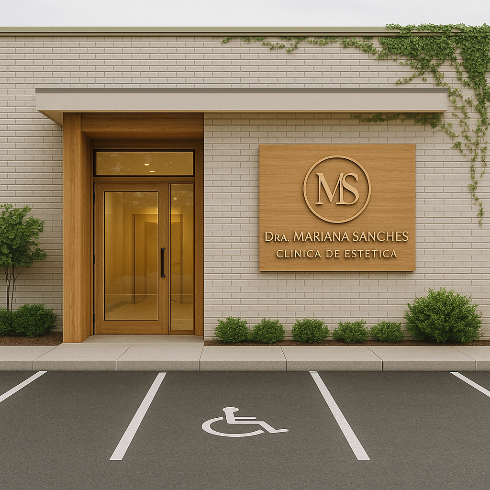

A História da Clínica de Estética da Dra. Mariana Sanches
Desde muito jovem, Mariana Sanches já demonstrava sua paixão pelo mundo da beleza e do cuidado. Ainda criança, passava horas experimentando penteados, criando maquiagens e explorando maneiras de cuidar da pele. O interesse pelo bem-estar era algo natural para ela, um verdadeiro reflexo de seu espírito cuidadoso e criativo.
Quando chegou o momento de escolher sua carreira, Mariana optou por cursar Farmácia, um campo que também despertava sua paixão por cuidar das pessoas. Como farmacêutica hospitalar, ela se dedicou intensamente, ganhando conhecimento e experiência em uma área essencial para a saúde. Mas, no fundo, seu sonho de trabalhar diretamente com estética e beleza continuava vivo.
Decidida a unir suas duas grandes paixões – o cuidado com a saúde e a estética –, Mariana mergulhou em novos desafios. Ingressou em uma pós-graduação em estética e, ao longo dos anos, investiu em cursos especializados, como design de sobrancelhas, limpeza de pele e outras técnicas que agregaram ainda mais valor ao seu trabalho.
Em 2024, depois de muitos anos de dedicação, estudos e prática, Mariana finalmente realizou seu grande sonho: abrir sua própria clínica de estética. O espaço é o reflexo de tudo que ela acredita – um lugar que combina ciência, beleza e cuidado, sempre com o propósito de transformar a autoestima e o bem-estar de seus clientes.
Clínica de Estética Dra. Mariana Sanches não é apenas um local de atendimento; é a concretização de uma vida dedicada ao que ela ama. Mariana é a prova de que paixão e persistência são os ingredientes essenciais para construir uma história de sucesso.